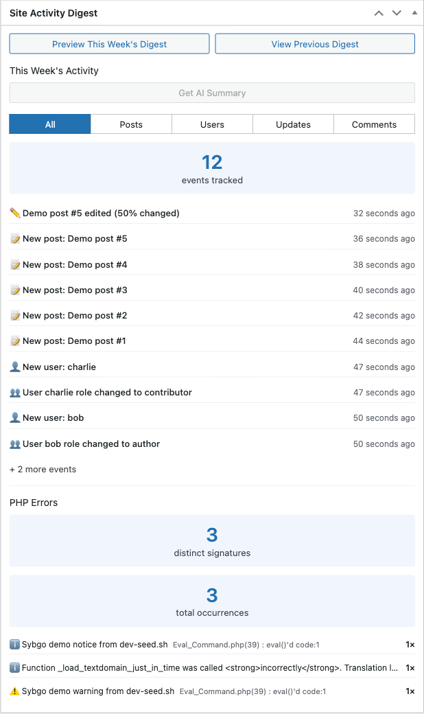
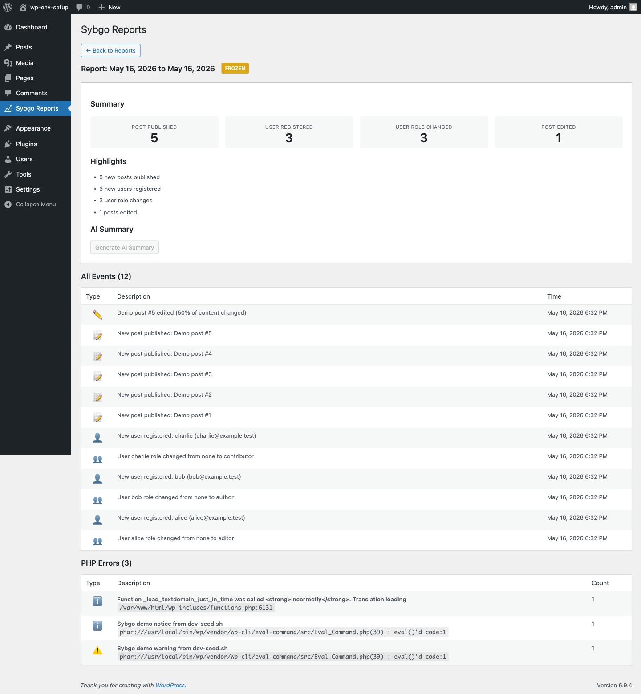

Your weekly digest
The digest is Sybgo's main job: a once-a-week recap of what happened on your site. You can read it in three places:
- In your inbox, sent every Monday morning.
- On the WordPress dashboard, in the Site Activity Digest widget.
- On the Sybgo Reports page, which keeps a full history.
The weekly email
Every Monday at 00:05 (in your site's time zone), Sybgo emails the digest for the week that just ended.
The email contains:
- A header with the date range covered.
- A list of plain-language highlights ("12 new posts published", "WordPress updated to 6.5").
- Statistics cards grouped by activity type, with trend arrows comparing the week to the previous week.
- A link back to your admin to see the full report.
Trend arrows mean:
- Up arrow — more activity than last week, with the percentage change.
- Down arrow — less activity than last week.
- No arrow — same as last week, or no previous week to compare against.
If your site had no activity that week, Sybgo by default does not send an email (to avoid inbox clutter). You can turn on empty-week emails in Settings.
The dashboard widget
When you log into the WordPress admin, the Dashboard screen shows a widget titled "Site Activity Digest".
The widget shows:
- Two buttons at the top: "Preview This Week's Digest" (shows what would be sent right now) and "View Previous Digest" (shows the last digest that was sent).
- A "Get AI Summary" button — disabled unless you have WordPress 7 and an AI provider configured. See AI summaries.
- A section titled "This Week's Activity" with a count of events this week and filter buttons: All, Posts, Users, Updates, Comments.
- A list of the most recent events with icons and "X minutes ago" timestamps.
- A PHP Errors section, shown only when at least one error was caught this week. It lists the top 5 errors with their file and line number.

The Sybgo Reports page
In the admin sidebar, click Sybgo Reports. You will see a table with every report Sybgo has produced.
The first row is always this week's report (the one Sybgo is still collecting events into). Below it are past reports in reverse chronological order.
This week's report (the active row)
- Period column shows the start date and the word "Now".
- Status badge shows ACTIVE in blue.
- Actions include "View Details" (which generates a live preview of what the report will look like) and "Freeze & Send Now" (which ends the week early, locks in the report, and sends the email immediately).
Clicking "Freeze & Send Now" opens a confirmation modal that explains exactly what will happen: end the current period, freeze the events, send the email, start a new period.
Past reports
Each past report shows:
- Period — the date range it covers.
- Events — how many events it contains.
- Status badge — FROZEN (yellow, email not yet sent) or SENT (green).
- Actions — "View Details" and "Resend Email" (useful if delivery failed or you want to send to additional recipients).
Report details page
Click "View Details" on any report to open the full report. You will see:
- The report title with the period covered and a status badge.
- A Summary section with statistics cards (one per event type, with trend arrows).
- A Highlights list — short plain-language sentences describing the week.
- An AI Summary section with a "Generate AI Summary" button (or "Regenerate AI Summary" once generated). See AI summaries.
- An All Events table listing every individual event with type icon, description, and timestamp.
- A PHP Errors table, when applicable, with one row per distinct error and an occurrence count.
